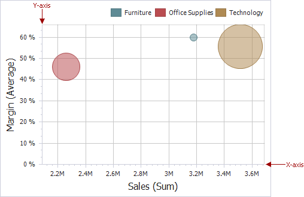

Axes
Scatter Chart X and Y-axes are numerical axis of values. You can specify various axes settings to change visual data presentation.

To access X and Y-axis settings, use the X-Axis Settings/Y-Axis Settings buttons in the Diagram section of the Design Ribbon tab.

This will invoke the X-Axis Settings/Y-Axis Settings dialog.

In this dialog, you can specify the following settings.
Always show zero level - Specifies whether or not the axis' zero level is visible. If this option is unchecked, the visible axis range is defined based on the values plotted in the chart.
Note
Note that the X-Axis Settings dialog does not contain this option.
Reverse - Allows you to reverse the axis. If the axis is reversed, its values are ordered from top to down.
Show grid lines - Allows you to hide and show grid lines for the axis.
Show axis - Allows you to hide and show the axis.
Show title - Allows you to hide and show the axis title. You can choose whether to use the default text or specify a custom string.
Logarithmic scale - Specifies whether or not the axis should display its numerical values using a logarithmic scale. The combo box next to this option allows you to select the logarithmic base from one of the predefined values.
The Numeric Format tab allows you to specify the numeric display formats for axis data, as described in the Formatting Data document.

The tab contains the following settings.
- Format type - Specifies format types for numeric values.
- Unit - Specifies the unit to convert the numeric values.
- Precision - Specifies the number of fractional digits to display.
- Currency - Specifies the currency symbol and format provided by the current culture settings.
- Culture - Specifies the name of a culture that defines the currency symbol and format.
- Include group separator - Specifies whether separators should be inserted between digit groups.